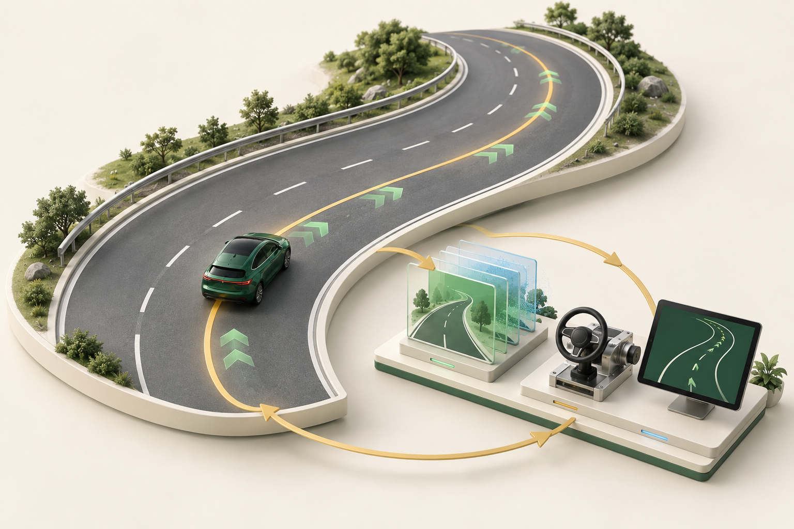
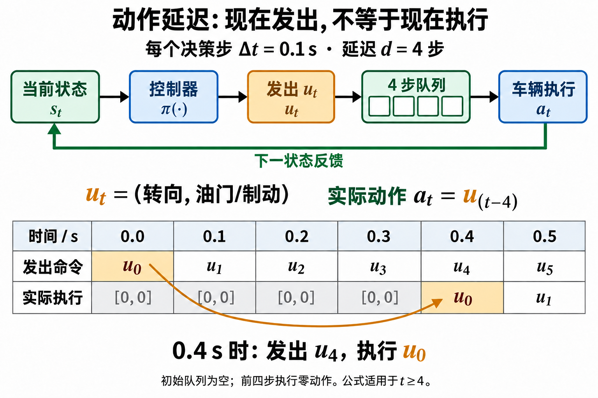
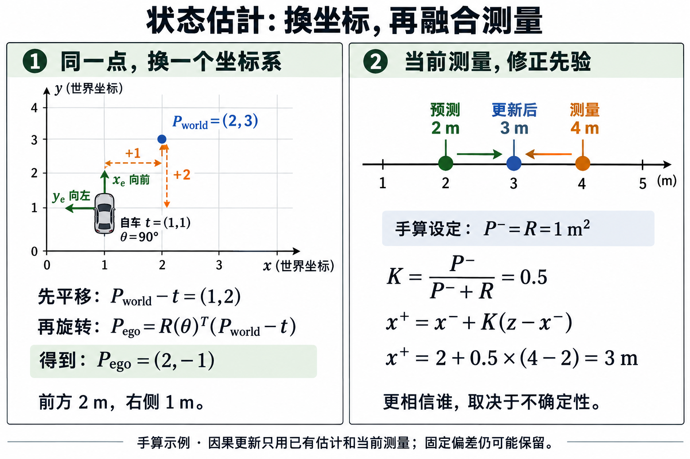
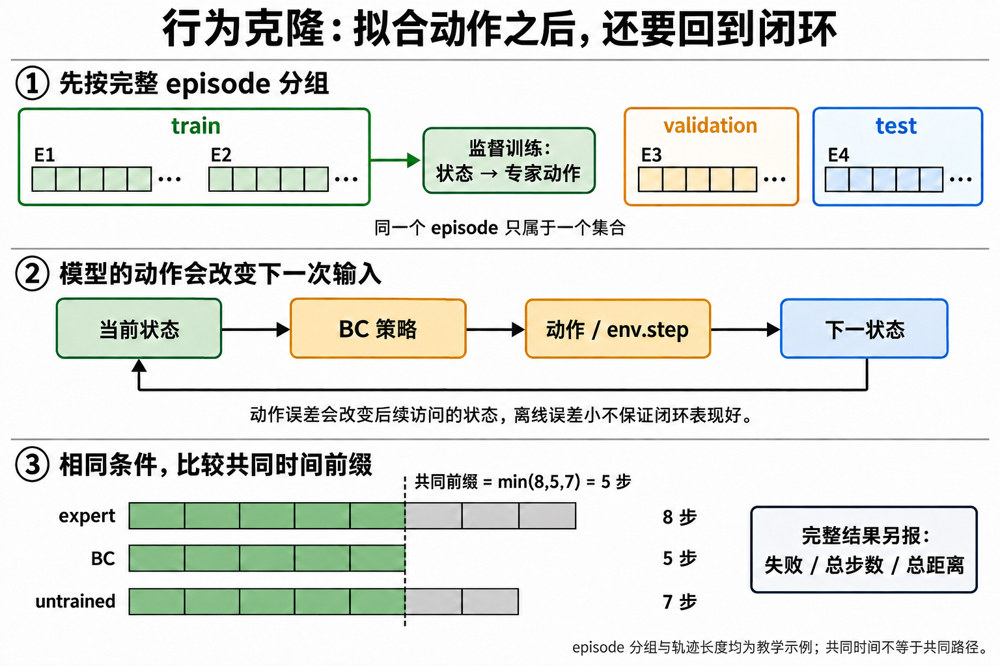
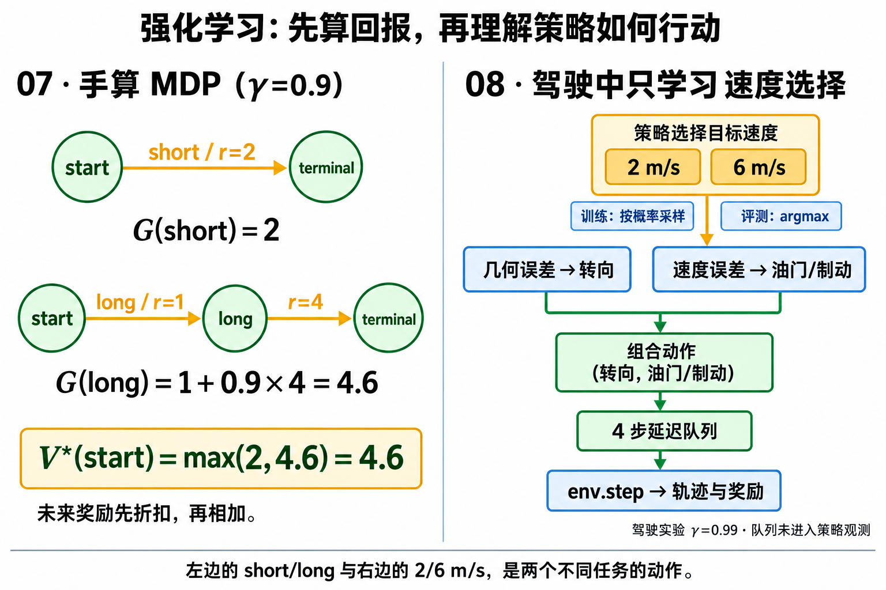

第一周：解释基线
看清状态、路线与动作的关系。用具体数值和图理解误差，运行一段完整轨迹，再改变初始偏差。
从真实运行的仿真闭环建立直觉。观察车辆、设计控制、加入延迟，再用轨迹和对照解释结果。沿着这些问题，逐步走向强化学习与具身智能。

MetaDrive 负责推进车辆，控制器根据当前观测纠正误差。发出的命令、延迟后实际执行的动作和下一次状态，都进入同一条实验记录。
看清状态、路线与动作的关系。用具体数值和图理解误差，运行一段完整轨迹，再改变初始偏差。
先预测延迟的影响，再运行对照。保留失败回放，尝试恢复方案，并说明改善了什么、付出了什么。
有过深度学习训练经验即可开始。单元解释所需几何和反馈概念；默认实验从仿真真值状态出发。每周约 26 小时，按实际理解程度安排进度。
完成时留下可复现的配置、轨迹、指标、一个失败案例和一份解释。观察结果与预期不一致，是下一次实验的起点。
每张图都对应一个可以手算的因果链：先预测，再运行 notebook，最后用真实轨迹检查预测。

查看原图控制器用当前状态计算命令，命令先进入执行队列，再由环境推进车辆。每个决策间隔 Δt=0.1s，d=4 对应 0.4s；零开始编号的 t=4 是第 5 个决策间隔，执行 u[0]，前 4 个间隔执行零动作。因此发出的动作和实际改变车辆的动作必须分开记录。
如果延迟步数 d=4，第 4 步执行 u[4] 还是 u[0]？
执行 u[0]。一般在第 t 步执行 u[t-d]；前 4 个决策间隔执行零动作。

查看原图坐标：世界点 → 减去自车位置 → 逆旋转 → ego 坐标。估计：仿真真值 → 合成带噪测量 → 因果滤波 → 控制器。两个机制分别检查，坐标变换本身不等于滤波。
车辆原点为 (1,1)、朝向 90°，世界点为 (2,3)。它在 ego frame 中的坐标是什么？
相对位移是 (1,2)。用 90° 旋转的逆变换后得到 (2,-1)：前方为正 x，左侧为正 y。再设一维滤波的预测值 x⁻=2m、测量 z=4m、P⁻=R=1m²，则 K=.5，后验为 x⁺=3m。

查看原图行为克隆先从专家 episode 学当前状态到动作的映射，再把模型放回 env.step。必须按完整 episode 划分集合，避免同一条轨迹的相邻行同时出现在训练和测试；闭环评测还要保留完整失败轨迹。
假设三条测试 episode 的长度是 8、5、7。共同时间窗口长度是多少？
是 5，即最短 episode 的长度。共同窗口只用于公平比较；长度 8 和 7 的完整轨迹，以及它们各自的失败或终止信息，仍要单独保留。

查看原图先用纸上 MDP 理解回报与价值；再在驾驶任务中学习 2/6 m/s 速度选择。若短路线奖励为 2，长路线奖励为 1 + 0.9×4 = 4.6，长路线价值更高；驾驶实验中转向由固定几何控制器负责，执行队列对策略隐藏。纸上 MDP 使用 γ=0.9，驾驶 REINFORCE 配置使用 γ=0.99，两者是不同任务。
折扣系数 γ=0.9 时，G(short)=2，G(long)=1+0.9×4。哪条路线回报更高？
长路线为 4.6，高于短路线的 2。下一课把这个回报逻辑接到 2/6 m/s 速度选择与 REINFORCE。
前八周已覆盖反馈控制、坐标与状态估计、行为克隆与闭环评测及RL基础。真实数据评测、机械臂操作和生成式策略，按推进计划继续交付。
TUM 智驾、MIT 机器人操作、Robot Learning Tutorial 与 ETH 课程，按当前实验的问题精选阅读。
原有几何、BEV、预测与接口练习移入参考区。具体简化与已知缺口写在各 notebook 开头，便于有针对性地复用。